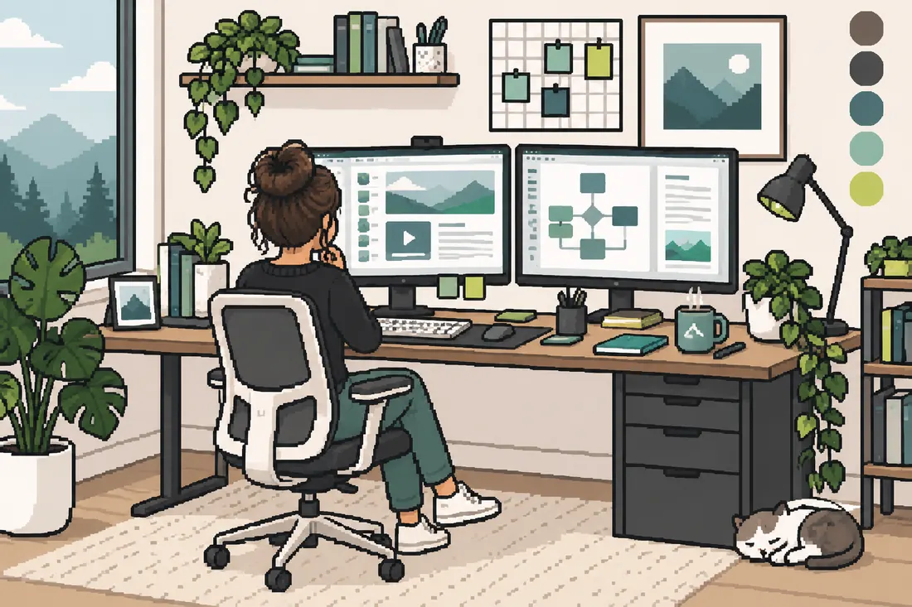
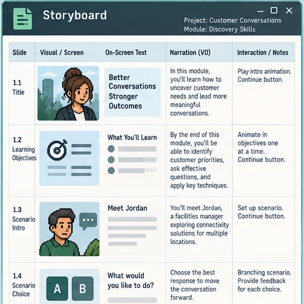
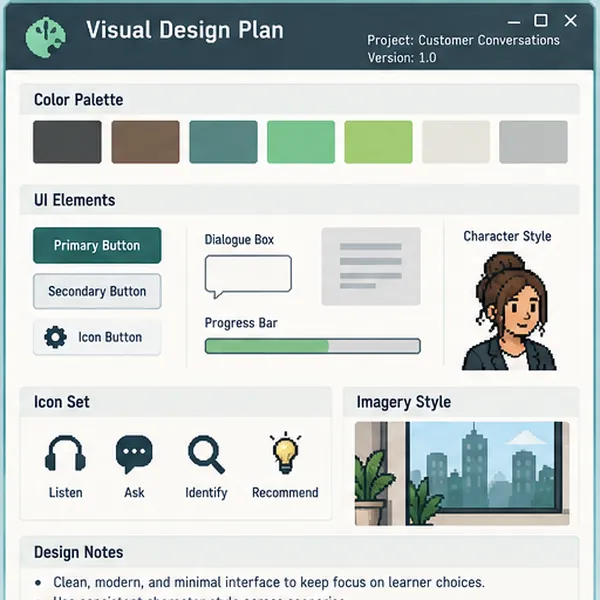
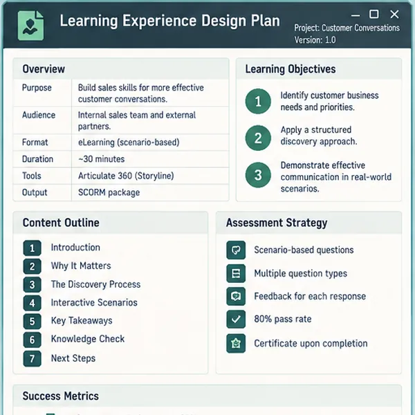

Background
Hi there,
My work began in high-school classrooms and K–12 curriculum, where I learned to design for access, challenge, and learner agency. I bring that foundation to enterprise learning, AI quality, learning platforms, and live facilitation.
Background
Skills
Tools




How I Work
How my role changes across the work
I work across learning design, AI quality, learning platforms, and facilitation. Choose a role to see what I own, how I approach it, and an example.
What I Own
From learning need to launch-ready experience.
I define the learner job, decide what belongs in the experience, organize source material, design the practice and assessment approach, build the content, coordinate SME review, and prepare it for LMS delivery.
Good outcomeThe learner can explain, recognize, decide, or do something useful after the experience.
What I Own
Evidence-based review instead of a general quality check.
I compare AI-generated work with the task, approved evidence, scoring guidance, and intended audience. I identify material errors, explain why they matter, and calibrate judgments so evaluation stays consistent.
Good outcomeThe score and feedback can be traced back to the task, approved evidence, and model response.
What I Own
Access, structure, support, testing, and follow-through.
I work with courses, learning plans, certifications, enrollment rules, migration readiness, learner support, reporting, and platform QA. The job is not only publishing content. It is making sure the right learner can find it, complete it, and get help when something goes wrong.
Good outcomeLearners see the right content, follow the intended path, and have a clear route when they need support.
What I Own
Preparation matters, but facilitation is responsive.
I develop facilitator materials, examples, prompts, activities, and timing for virtual workshops with internal teams and external partners. During delivery, I adjust pacing and explanation based on questions, confidence, and the way the group is responding.
Good outcomeLive time is used for explanation, questions, practice, and coaching instead of slide narration.
Haley's Toolbox
The tools change with the job.
I use authoring, platform, production, coding, data, and collaboration tools as parts of a learning system, not as a checklist of software.
Haley's Toolbox
Design · Build · Operate · Improve
Instructional Design + eLearningArticulate 360 · Rise 360 · Storyline 360 · Review 360
LMS + Learning TechnologyAbsorb · Docebo · xAPI · Credly
Multimedia + Content ProductionPremiere · After Effects · Audition · Illustrator · Camtasia · Colossyan · Canva
Coding + Web DevelopmentHTML · CSS · JavaScript · Python · GitHub · VS Code
Systems + Data + AutomationSalesforce · Selenium · pandas · openpyxl · Excel
Collaboration + WorkflowAsana · Microsoft Teams · OneDrive · PowerPoint